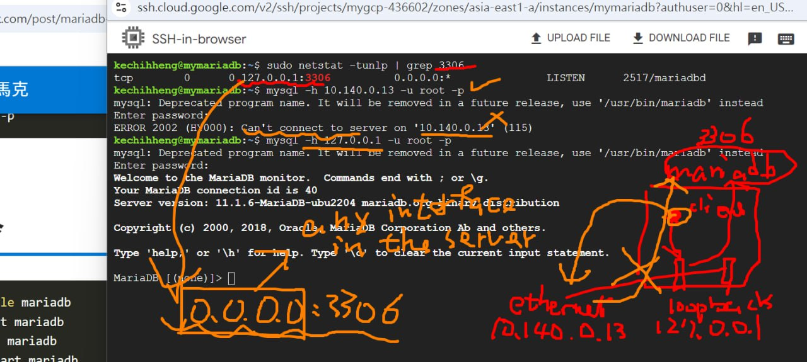

資工四 111010539 陳文茜
9.10
一、參考資料
1、https://blog.cloud-ace.tw/google-cloud-platform/products/what-is-gcp/
2、2022 Google Cloud：GCP 谷歌助理云工程师认证 + 90个动手项目 Udemy付费课程 中英字幕-哔哩哔哩
3、winscp
二、註冊GCP
1、GCP網址
2、資料提示：Department of Computer Science and Information Engineering, National Quemoy University。No.1, University Rd., Jinning, Kinmen, 892 Taiwan, R.O.C.
9.24
一、GPT
3、search chatgpt in google workspace marketplace
二、Why should we use cloud technology?為何使用雲技術？
1、雲技術的好處
1）. Pay as u need 按需付費
2）. Reduce latency 降低延遲
3）. Add reliability 增加可靠性
4）. Law 合法合規
2、雲技術的用處
1）. computer 計算服務
2）. storage 存儲服務
3）. Networking service 網絡服務
三、虛擬機-myvm1
1、在Compute Engine，选择VM instances，选择Create Instance
2、Region:Asia-east1
3、Zone:asia-east1-a
4、Machine type:Ubuntu 20.04 LTS
5、Machine type:e2-medium
6、click on connect-ssh to start ssh client,you'll get this:

四、gcloud CLI
https://cloud.google.com/sdk/docs/install?hl=zh-cn#deb
10.1
一、Apache2 Web
1、安裝
update the software DB
sudo apt update
install www server
sudo apt install apache2
check the www server status
sudo systemctl status apache2
管理Apache2服務
sudo systemctl start apache2//啟動
sudo systemctl stop apache2//停止
sudo systemctl restart apache2//重啟
sudo systemctl enable apache2//啟用
sudo systemctl disable apache2//禁用
sudo netstat -tunlp | grep 80//查看80端口狀態
port80
then you'll get this:
page hi
二、自動化配置
#! /bin/bash
apt update
apt -y install apache2
cat < /var/www/html/index.html
Linux startup script added directly. $(hostname -I)
啟動虛擬機後，訪問http://
三、images
四、DNS
1、Alias IP ranges
通过配置静态外部 IP 地址来确保虚拟机具有固定的 IP 地址，而不是在每次重启后分配一个新的临时 IP.这是在虚拟机的网络配置中设置的，允许给虚拟机的不同网络接口分配多个 IP 范围。这个功能可以用于多 IP 地址配置。

https://dynv6.com/
10.8
一、billing
need to upload the html files. open floder to see details
use ls to see the files
二、gsutil
gsutil cp [OPTION] SOURCE DESTINATION
1、gsutil ls
用于列出 Google Cloud Storage 中的文件和存储桶（buckets）
gsutil ls gs://
列出 Google Cloud Storage 中所有buckets的名称
2、gsutil cp
复制单个文件或多个文件
gsutil cp [SOURCE] [DESTINATION]
gsutil cp -r
复制目录及其内容。递归地将目录中的所有文件和子目录复制到目标位置。
gsutil cp -r [SOURCE_DIRECTORY] [DESTINATION]
2、IAM
search iam&admin——service accounts——+create service account
role choose storage admin,then countinue

3、配置ssh
在myweb1上生成ssh密鑰
sudo passwd root
su
sudo apt install vim -y
vim /etc/ssh/sshd_config
//確保PermitRootLogin yes、PasswordAuthentication yes存在
sudo systemctl restart sshd
ssh-keygen//生成密鑰
cat ~/.ssh/id_rsa.pub//查看公鑰內容
//以下，在myweb2創建公鑰文件，將myweb1的公鑰內容粘貼保存
vim ~/.ssh/authorized_keys
ssh root@10.140.0.9//嘗試登錄myweb2
10.15
一、安裝MariaDB
https://blog.tarswork.com/post/mariadb-install-record"
sudo vim /etc/apt/sources.list.d/mariadb.sources
choose ubuntu 22.01 LTS
sudo apt update
sudo apt install mariadb-server mariadb-client -y
sudo systemctl status mariadb//you should see active running
mysql -u root -p//login mariadb
//if success ,you'll see something like this
Welcome to the MariaDB monitor. Commands end with ; or \g.
Your MariaDB connection id is 10
Server version: 10.5.12-MariaDB-1:10.5.12+maria~focal mariadb.org binary distribution
Type 'help;' or '\h' for help. Type '\c' to clear the current input statement.
MariaDB [(none)]>
二、ip配置問題
sudo apt install net-tools
sudo netstat -tunlp | grep 3306//查看3306端口監聽
only 127.0.0.1 can be connected
0.0.0.0:允许来自所有网络接口的连接。
sudo vim /etc/mysql/mariadb.conf.d/50-server.cnf//找到bind-address，修改為0.0.0.0
sudo systemctl restart mariadb
授權遠程訪問
GRANT ALL PRIVILEGES ON *.* TO 'root'@'%' IDENTIFIED BY '12345678' WITH GRANT OPTION;
//将 root 用户的权限授予所有主机（% 表示所有 IP 地址）。为 root 用户设置密码为 12345678.使得 root 用户可以授权其他用户
FLUSH PRIVILEGES;
//用来让权限更改立即生效
exit
sudo mysql -u root -p//重新登录
on @mywww：connect to mariadb
ping 10.140.0.13//make sure you can connect to it
sudo apt install mysql-client
mysql -h 10.140.0.13 -u root -p
https://github.com/stereomp3/note/blob/main/linux/111semester01/13-.md#LAMP
三、php
https://docs.ossii.com.tw/books/ubuntu-server-2004-apache-mariadb-php
sudo dpkg -l | grep apache2//確認apache2正確安裝
sudo a2enmod php8.1//啟用php8.1
sudo systemctl restart apache2//重啟生效
vim info.php//測試頁面
//配置信息
<?php
phpinfo();
?>
sudo cp info.php /var/www/html/
//将 info.php 文件复制到 Apache2 的 Web 根目录 /var/www/html/
四、php鏈接數據庫
<?php
$servername="10.140.0.13";
$username="root";
$password="12345678";
$dbname="testdb";
$conn = new mysqli($servername, $username, $password, $dbname);
//連接到數據庫。$servername ：数据库服务器的 IP 地址，$username 和 $password 是用于连接数据库的用户名和密码，$dbname 是数据库的名称
if($conn->connect_error){
die("connection failed: " . $conn->connect_error);
}
else{
echo "connect OK!" . "
";
}
//检查连接是否成功
$sql="select name,phone from addrbook";
$result=$conn->query($sql);
//查询 addrbook 表中的 name 和 phone 列。
if($result->num_rows>0){
while($row=$result->fetch_assoc()){
echo "name: " . $row["name"] . "\tphone: " . $row["phone"] . "
";
}
} else {
echo "0 record";
}
?>
//如果查询结果包含数据，使用 while 循环逐行输出每个记录的 name 和 phone。如果没有数据，输出 0 record。
10.22
https://www.shanyemangfu.com/gcp-300-old-account.html
一、VPC
1、myvpc2配置
then you'll get this
2、VPC Network Peering
3、利用 Python 内置的 HTTP 服务器快速提供网页内容
在myvpc1生成sshkey，.pub粘貼到myvpc2下
vim authorized_keys
ip addr show//focus on inet ip which under altname
ssh username@ip
在 myvpc1 上启动 HTTP 服务器
python3 -m http.server 9000//启动 Python 的 HTTP 服务器
^C//stop running http server
ls//chech files
echo hi > hi.htm//create a .htm file named hi,with "hi" in it
python3 -m http.server 9000//restart
//in myvpc2
curl http://127.0.0.1:9000/hi.htm
you should do it under the same host
port2222 login
sudo vim /etc/ssh/sshd_config
//change port 22 to 2222
sudo systemctl restart sshd
sudo ufw allow 2222/tcp//may need do this
10.29
check/set the type/size,automatically,private ip
gcloud sql connect mydb --user=root --quiet
//connet to google cloud SQL through google cloud CLI
set database、connect
/* 顯示目前有的資料庫 */
show databases;
/* 創建資料庫 */
create database testdb;
/* 使用資料庫 */
use testdb;
/* 創建資料表 */
create table addrbook(name varchar(50) not null, phone char(10));
/* 加入資料 */
insert into addrbook(name, phone) values ("tom", "0912123456");
insert into addrbook(name, phone) values ("mary", "0912123567");
/* 選擇資料 */
select name,phone from addrbook;
sudo apt install apache2 php libapache2-mod-php php-mysql
sudo systemctl restart apache2
sudo vim testdb.php
//write them in testdb.php
<?php
$servername="127.0.0.1";
$username="root";
$password="centos";
$dbname="testdb";
$conn = new mysqli($servername, $username, $password, $dbname);
//use mysqli to connect with database.
if($conn->connect_error){
die("connection failed: " . $conn->connect_error);
}
else{
echo "connect OK!" . "<br>";
}
$sql="select name,phone from addrbook";
$result=$conn->query($sql);
//doing sql select,read addrboook and output the data one by one to the website
if($result->num_rows>0){
while($row=$result->fetch_assoc()){
echo "name: " . $row["name"] . "\tphone: " . $row["phone"] . "<br>";
}
} else {
echo "0 record";
}
//if database exist,it will show every records,or show 0 record.
//check the website
sudo cp testdb.php /var/www/html/
?>
勾选enable deletion protection【in edit mydb】
instance group
steps in follow picture

You need to create two vpc networks, i.e. myvpc1 and myvpc2. In myvpc1 (any zone), create two VMs with http server. In myvpc2, create DB (vm or cloud sql). make http servers connect to DB. Also add one load balancer. If a customer connect to LB, LB will dispatch the traffic to the backend http server.

创建两个VPC网络，分别包含HTTP服务器和数据库，搭建负载均衡器（Load Balancer）以处理流量分发。創建myvpc1和myvpc2兩個vpc網絡，各自獨立，分別配置subnet和防火墻規則，在myvpc1中創建兩個vm並安裝http服務器，在myvpc2中創建數據庫，配置myvpc1的http服務器連接到myvpc2的數據庫。通過load balancer創建unmannaged instance group，如上述圖片1-12執行配置。
11.12
1、 remove the public ip addresses of the www servers
see as the follow pictures
2、set Managed Load Balancer & Auto-scaling
instance-template->instance groups-> load balancer
create instance group -> new managed instance group(stateless),named it group2,instance template:my-template1
check this link:https://superuser.com/questions/443406/how-can-i-produce-high-cpu-load-on-a-linux-server
when you increse cpu load , check %cpu(s) and load average.
check vm instances, the vm automatically increaces to 3.using the LB, you can get 3 different IP address.
3、delete managed load balancer
To delete an autoscaler for a managed instance group (MIG) in Google Cloud Platform (GCP), you can do the following:
Go to the Instance groups page in the Google Cloud console
Select the name of the MIG to open its overview page
Click Edit to view the group's configuration
Under Autoscaling, select Delete autoscaling configuration from the Autoscaling mode drop-down list
Click Save
You can also delete a MIG using the delete command. If the MIG has an attached autoscaler, you must first delete the autoscaler.
Only MIGs can be used with an autoscaler. Autoscaling is a feature that adds or deletes instances from a MIG based on the group's autoscaling policy.
11.19
1、cloud nat
check no external ip

failed to ping 8.8.8.8
set cloud nat
now it success
2、Cloud Monitoring

check this link:https://cloud.google.com/monitoring/monitor-compute-engine-virtual-machine?hl=en
check the link:https://console.cloud.google.com/apis/enableflow?apiid=compute.googleapis.com,monitoring.googleapis.com,logging.googleapis.com&project=mygcp-436602
cat /dev/zero > /dev/null
you'll recived something like this
3、LB with CDN
https://dynv6.com/
set dns.army
set in GCP,test then
curl -o /dev/null -s -w 'Total: %{time_total}\n' http://35.201.147.98/
11.26
https://chromewebstore.google.com/detail/%E6%B2%89%E6%B5%B8%E5%BC%8F%E7%BF%BB%E8%AD%AF-%E7%B6%B2%E9%A0%81%E7%BF%BB%E8%AD%AF%E6%93%B4%E5%85%85-pdf%E7%BF%BB%E8%AD%AF-%E5%85%8D%E8%B2%BB/bpoadfkcbjbfhfodiogcnhhhpibjhbnh?hl=zh-TW
https://mile.cloud/zh/resources/blog/ddos-protection-cloud-armor-ip-load-balancing_565
https://medium.com/@kellenjohn175/how-to-guides-gcp-security-%E4%BB%A5cloud-armor-%E5%BC%B7%E5%8C%96-beyondcorp-%E5%AE%89%E5%85%A8%E6%A8%A1%E5%9E%8B-c277d5e0cb15
12.3
https://towardsdatascience.com/machine-learning-model-as-a-serverless-endpoint-using-google-cloud-function-a5ad1080a59e
https://github.com/saedhussain/gcp_serverless_ml
git clone https://github.com/saedhussain/gcp_serverless_ml.git
https://medium.com/google-cloud/move-large-files-from-gcs-bucket-using-cloud-function-232852b10a4c
使用 Google Cloud Functions 和 Cloud Storage 实现基于存储事件的触发器，以及文件转移和大小检查的逻辑
import functions_framework
from google.cloud import storage
from google.cloud.storage import Blob
# Triggered by a change in a storage bucket
@functions_framework.cloud_event
def hello_gcs(cloud_event):
data = cloud_event.data
event_id = cloud_event["id"]
event_type = cloud_event["type"]
bucket = data["bucket"]
name = data["name"]
metageneration = data["metageneration"]
timeCreated = data["timeCreated"]
updated = data["updated"]
print("="*30)
print(f"Event ID: {event_id}")
print(f"Event type: {event_type}")
print(f"Bucket: {bucket}")
print(f"File: {name}")
print(f"Metageneration: {metageneration}")
print(f"Created: {timeCreated}")
print(f"Updated: {updated}")
print(f"Processing file: {name}.")
storage_client = storage.Client(project='mygcp-436602')
source_bucket=storage_client.get_bucket('mybkt-src')
destination_bucket=storage_client.get_bucket('mybkt-dst')
blobs=list(source_bucket.list_blobs(prefix=''))
print(blobs)
for blob in blobs:
if blob.size > 1000000 and blob.name == name:
source_blob = source_bucket.blob(blob.name)
new_blob = source_bucket.copy_blob(source_blob, destination_bucket, blob.name)
blob.delete(if_generation_match=None)
print(f'File moved from {source_blob} to {new_blob}')
else:
print("File size is below 1MB")
Cloud Console -> Cloud Storage ->mybkt-src
Cloud Functions -> Cloud Storage ->Object Finalize ->mybkt-src
通过 Google Cloud SDK 命令行工具 gcloud 创建和管理 Cloud SQL 实例
gcloud sql instances create mydb --database-version=MYSQL_5_7 --cpu=2 --memory=4GB --root-password=admin1234 --assign-ip --zone=us-central1-a --availability-type=zonal --no-backup
gcloud sql databases create demo-db --instance=mydb, -i mydb
gcloud sql connect mydb --user=root
12.10
1、通过 HTTP 请求触发云函数，将数据插入到 Google Cloud SQL 的数据库
创建一个名为 testdb 的数据库，并将其关联到一个名为 mydb 的 Cloud SQL 实例中
gcloud sql databases create testdb --instance=mydb, i-mydb
在 testdb 数据库中创建一个名为 info 的表
use testdb;
CREATE TABLE info (
id INT NOT NULL AUTO_INCREMENT,
firstname VARCHAR(20),
lastname VARCHAR(20),
age VARCHAR(3),
collegename VARCHAR(150),
PRIMARY KEY (id)
);
使用 SQLAlchemy 写入数据库 main.py
import sqlalchemy
# Connection name we noted earlier
connection_name = "mygcp-436602:us-central1:mydb"
# Database name
db_name = "testdb"
db_user = "root"
db_password = "admin1234"
driver_name = 'mysql+pymysql'
query_string = dict({"unix_socket": "/cloudsql/{}".format(connection_name)})
def writeToSql(request):
# You can change this to match your personal details
stmt = sqlalchemy.text("INSERT INTO info (firstname, lastname, age, collegename) values ('Sagadevan', 'Kounder', '21', 'XYZ College')")
db = sqlalchemy.create_engine(
sqlalchemy.engine.url.URL(
drivername=driver_name,
username=db_user,
password=db_password,
database=db_name,
query=query_string,
),
pool_size=5,
max_overflow=2,
pool_timeout=30,
pool_recycle=1800
)
try:
with db.connect() as conn:
conn.execute(stmt)
print("Insert successful")
except Exception as e:
print("Some exception occured" + str(e))
return 'Error: {}'.format(str(e))
return 'ok'
requirements.txt:列出了项目所需的 Python 库，确保在 Google Cloud Functions 部署时能够正确安装所需的依赖。
create a folder named cf_mysql. Put main.py and requirements.txt in this folder.
部署云函数
gcloud functions deploy writeToSql \
--entry-point writeToSql \
//指定函数入口点，即处理 HTTP 请求的函数是 writeToSql
--runtime python310 \
--trigger-http \
//允许通过 HTTP 请求触发该云函数
--allow-unauthenticated \
//允许未经身份验证的请求触发云函数
--no-gen2 \
//指定不使用 Gen 2 云函数
--source .
//将当前目录作为源文件上传，包含 main.py 和 requirements.txt
实现数据的动态插入，通过 Cloud Shell 和命令行工具简化操作
使用 Cloud Shell 创建了 Cloud SQL 实例、数据库和表。通过命令行在 Cloud Shell 中执行上述命令，创建资源并设置所需配置
gcloud sql instances create mydb --database-version=MYSQL_5_7 --cpu=2 --memory=4GB --root-password=admin1234 --assign-ip --zone=us-central1-a --availability-type=zonal --no-backup
//创建一个名为 mydb 的 Cloud SQL 实例，使用 MySQL 5.7 版本，分配了 2 个虚拟 CPU 和 4GB 内存，并设置了 admin1234 作为 root 用户的密码。实例被分配了公网 IP，位于 us-central1-a 区域，并且启用了可用性选项为 zonal，且没有启用备份
gcloud sql databases create testdb --instance=mydb, -i mydb
//创建一个名为 testdb 的数据库，并将其与之前创建的 mydb 实例关联
gcloud sql connect mydb --user=root
//通过 gcloud sql connect 命令连接到 mydb 实例，使用 root 用户进行登录
use testdb;
CREATE TABLE info (
id INT NOT NULL AUTO_INCREMENT,
firstname VARCHAR(20),
lastname VARCHAR(20),
age VARCHAR(3),
collegename VARCHAR(150),
PRIMARY KEY (id)
);
//在 testdb 数据库中创建一个 info 表，包含 id、firstname、lastname、age 和 collegename 字段。id 字段是主键，且会自动递增
gcloud functions deploy writeToSql --entry-point writeToSql --runtime python310 --trigger-http --allow-unauthenticated --no-gen2 --source .
//部署一个 Cloud Function，名为 writeToSql，该函数会通过 HTTP 触发。它使用 Python 3.10 作为运行时环境，并允许未经身份验证的访问。--source . 指定当前目录（包含 main.py 和 requirements.txt 文件）作为源代码上传
在 Google App Engine 上部署Flask应用
五種計算資源
Compute Engine (CE)：虚拟机实例，您可以完全控制操作系统和应用程序，适用于需要更高自定义和管理的场景。
Cloud Functions (CF)：事件驱动的无服务器计算，适用于需要响应事件（如 HTTP 请求、文件上传等）的轻量级应用。
App Engine (GAE)：完全托管的无服务器应用平台，适用于需要快速部署和管理 Web 应用程序而不需要担心底层基础设施的场景。
Cloud Run：无服务器容器平台，允许您运行基于 Docker 容器的应用程序，适合有微服务架构的应用。
Google Kubernetes Engine (GKE)：用于容器化应用的 Kubernetes 管理服务，适用于复杂的微服务架构和自动化容器管理。
app.yaml：配置文件，包含 GAE 环境的信息。 main.py：应用程序的 Python 主文件，通常包含 Flask 应用的定义。 requirements.txt：列出应用所需的 Python 包或库。
touch app.yaml main.py requirements.txt
main.py
一个简单的 Flask 应用，它定义了一个 / 路由，并返回一条简单的 "Hello, World!" 消息。Flask 是一个轻量级的 Python Web 框架，用于快速构建 Web 应用程序。
from flask import Flask
app = Flask(name)
@app.route("/")
def hello():
return "Hello, World! 2024/7/22"
if name == "main":
app.run(debug=True)//使应用在开发模式下运行，便于调试
app.yaml
flask//列出了 Flask 包作为应用的依赖项
requirements.txt
runtime: python39// 指定应用将运行在 Python 3.9 环境下
service: myflask//定义了 GAE 中的服务名称。这个值会在 GAE 上生成相应的服务
机器学习模型的训练、部署到GCP
touch app.yaml client.py main.py requirements.txt train_model.py
mkdir test-iris
train_model.py (训练模型)
使用了 sklearn 中的 Iris 数据集，通过决策树模型对数据进行训练并保存该模型。保存的模型将以 pickle 格式保存为 model.pkl，便于后续加载并使用。
使用 train_test_split 将数据分为训练集和测试集，模型训练后，预测并输出结果
# -*- coding: utf-8 -*-
import pickle
from sklearn import datasets
from sklearn.model_selection import train_test_split
from sklearn import tree
# simple demo for traing and saving model
iris=datasets.load_iris()
x=iris.data
y=iris.target
#labels for iris dataset
labels ={
0: "setosa",
1: "versicolor",
2: "virginica"
}
x_train, x_test, y_train, y_test = train_test_split(x, y, test_size=.25)
classifier=tree.DecisionTreeClassifier()
classifier.fit(x_train, y_train)
predictions = classifier.predict(x_test)
# Export the model
model_name = 'model.pkl'
print("Finished training and dumped the model as {0}".format(model_name))
pickle.dump(classifier, open(model_name, 'wb'))
requirements.txt
scikit-learn//用于训练机器学习模型
flask//用于构建 Web 应用的框架
main.py (Flask 应用程序代码)
启动一个 Flask Web 应用，加载训练好的 model.pkl 模型并提供预测接口。
在 / 路由中，应用返回一个简单的 HTML 页面。
/api 路由使用 POST 请求接收输入数据并调用加载的模型进行预测，预测结果以 JSON 格式返回。
import pickle
from flask import Flask, request, jsonify
app = Flask(__name__)
# Load the model
model = pickle.load(open('model.pkl', 'rb'))
labels = {
0: "versicolor",
1: "setosa",
2: "virginica"
}
@app.route("/", methods=["GET"])
def index():
"""Basic HTML response."""
body = (
"<html>"
"<body style='padding: 10px;'>"
"<h1>Welcome to my Flask API</h1>"
"</body>"
"</html>"
)
return body
@app.route('/api', methods=['POST'])
def predict():
# Get the data from the POST request.
data = request.get_json(force=True)
predict = model.predict(data['feature'])
return jsonify(predict[0].tolist())
if __name__ == '__main__':
app.run(debug=True, host='0.0.0.0', port=8080)
client.py (客户端请求代码)
通过发送 POST 请求到 Flask 应用的 /api 路由来请求模型进行预测
通过 requests 库将数据以 JSON 格式发送到服务器，接收到的响应是模型的预测结果，然后根据 labels 输出预测的花卉类别
# -*- coding: utf-8 -*-
import requests
# Change the value of experience that you want to test
url = 'https://iris-predict-dot-mygcp-436602.de.r.appspot.com/api' # change to 127.0.0.1 for local testing
feature = [[5.8, 4.0, 1.2, 0.2]]
labels = {
0: "setosa",
1: "versicolor",
2: "virginica"
}
r = requests.post(url, json={'feature': feature})
print(labels[r.json()])
app.yaml
app.yaml 是 GAE 中用来配置应用的文件。它告诉 Google Cloud 如何部署和运行这个应用。
runtime: python312
service: iris-predict
Docker
使用了 Apache HTTP 服务器来托管网页
index.html 被复制到容器中的 /var/www/html 目录下，容器启动后监听 8080 端口并映射到主机端口 80
FROM ubuntu/apache2:latest
ADD index.html /var/www/html
sudo docker build -t mywww:1.0 .
sudo docker run -d -p 8080:80 mywww:1.0
12.17
Docker
docker build -t mywww:1.0
run docker images
启动一个基于 mywww:1.0 镜像的 Docker 容器。选项 -d 表示后台运行，-p 8080:80 表示将容器内的 80 端口映射到主机的 8080 端口。
docker run -d -p 8080:80 mywww:1.0
将本地文件构建成一个 Docker 镜像，并标记为 Artifact Registry 的完整路径。
-t：指定镜像的标签。
asia-east1-docker.pkg.dev/mygcp-436602/mydocker/mywww:1.0：完整的 Artifact Registry 地址，表示镜像会被标记为版本 1.0 并上传至 mydocker 存储库。
.：表示使用当前目录的内容作为构建上下文。
docker build -t asia-east1-docker.pkg.dev/mygcp-436602/mydocker/mywww:1.0 .
推送镜像到 Artifact Registry
docker push asia-east1-docker.pkg.dev/mygcp-436602/mydocker/mywww:1.0
将本地构建的 mywww:1.0 镜像上传到 Artifact Registry 中指定的 mydocker 存储库。
Artifact Registry 必须配置了正确的权限，确保能成功推送镜像。
Version 中有镜像文件，tags 显示为 1.0，说明镜像版本已成功上传并可用
edit container port
GCP 计算资源种类
Compute Engine
Cloud Function
Google App Engine (GAE)
Cloud Run
Google Kubernetes Engine (GKE)
机器学习模型训练与部署
文件创建
touch client2.py client.py Dockerfile main.py requirements.txt
touch train_model.py
train_model.py
训练并保存模型的 Python 脚本
# -*- coding: utf-8 -*-
import pickle
from sklearn import datasets
from sklearn.model_selection import train_test_split
from sklearn import tree
# simple demo for training and saving model
iris = datasets.load_iris()
x = iris.data
y = iris.target
# Labels for iris dataset
labels = {
0: "setosa",
1: "versicolor",
2: "virginica"
}
x_train, x_test, y_train, y_test = train_test_split(x, y, test_size=0.25)
classifier = tree.DecisionTreeClassifier()
classifier.fit(x_train, y_train)
predictions = classifier.predict(x_test)
# Export the model
model_name = 'model.pkl'
print("Finished training and dumped the model as {0}".format(model_name))
pickle.dump(classifier, open(model_name, 'wb'))
requirements.txt
包含依赖库
scikit-learn
flask
main.py
Flask 应用，加载模型并提供预测服务
import pickle
from flask import Flask, request, jsonify
app = Flask(__name__)
# Load the model
model = pickle.load(open('model.pkl', 'rb'))
labels = {
0: "versicolor",
1: "setosa",
2: "virginica"
}
@app.route("/", methods=["GET"])
def index():
"""Basic HTML response."""
body = (
""
""
"Welcome to my Flask API
"
""
""
)
return body
@app.route('/api', methods=['POST'])
def predict():
# Get the data from the POST request.
data = request.get_json(force=True)
predict = model.predict(data['feature'])
return jsonify(predict[0].tolist())
if __name__ == '__main__':
app.run(debug=True, host='0.0.0.0', port=8080)
Dockerfile
Docker 镜像构建文件
FROM python:3.9
WORKDIR /app
ADD . /app
RUN pip install -r requirements.txt
CMD ["python", "main.py"]
EXPOSE 8080
client2.py
测试客户端发送数据并接收模型预测结果
# -*- coding: utf-8 -*-
import requests
# Change the value of experience that you want to test
url = 'http://127.0.0.1:8080/api'
feature = [[5.8, 4.0, 1.2, 0.2]]
labels = {
0: "setosa",
1: "versicolor",
2: "virginica"
}
r = requests.post(url, json={'feature': feature})
print(labels[r.json()])
从本地开发和测试到容器化和云端部署
运行模型训练脚本，生成 model.pkl 文件。验证训练脚本是否正常工作。确保模型文件已成功生成，后续服务可以加载
运行 Flask 应用，启动一个本地 HTTP API 服务。验证 Flask 代码是否正常。确保 API 能够加载模型并正确返回预测结果
docker rm -f 40a:强制移除一个已运行的 Docker 容器。清理测试中多余的容器，为后续运行提供干净的环境。
运行客户端脚本，向本地运行的 Flask API 发送请求。验证服务是否能够接收请求并返回正确的结果
根据 Dockerfile 构建一个新的 Docker 镜像，命名为 myiris:1.0。将 Python 服务及其依赖打包成一个 Docker 容器，便于移植和运行。
启动 myiris:1.0 镜像的容器，将主机的 8080 端口映射到容器内的 8080 端口。在容器中运行 API 服务，模拟实际的生产环境。。验证容器化服务是否正常运行

run python client.py again.验证容器内服务的功能。
推送到 GCP 的容器镜像
docker build -t asia-east1-docker.pkg.dev/mygcp-436602/test-iris/myiris:1.0
//重新构建镜像，并使用 GCP Artifact Registry 的命名规则。使镜像名称符合 GCP 要求，以便后续推送到 Artifact Registry。
docker push asia-east1-docker.pkg.dev/mygcp-436602/test-iris/myiris:1.0
//将本地镜像推送到 GCP 的 Artifact Registry。将镜像存储到云端，为后续部署提供基础。便于在不同的环境中直接拉取和运行该镜像。
Terraform
check this link https://devops-with-alex.com/day-4-terraform-install/
Terraform 基础设置
terraform init:初始化 Terraform 环境，下载所需的 provider 插件
terraform fmt:格式化 Terraform 配置文件，保持文件整洁和统一。
terraform validate:验证 Terraform 配置文件的正确性。
terraform plan:生成执行计划，显示哪些资源会被创建、修改或销毁。
terraform apply / terraform destroy
apply：执行计划，实际创建或修改资源。
destroy：销毁所有由 Terraform 管理的资源。
main.tf
在 GCP 中创建一个 smallko-gcs-bucket 存储桶，用于存储文件或镜像
provider "google" {
//使用 GCP 的 Provider
credentials = "${file("mySA.json")}"
//读取本地的服务账号文件 mySA.json，用于授权
project = "mygcp-436602"
//指定 GCP 项目 ID
region = "asia-east1"
//设置默认的区域为 asia-east1
}
resource "google_storage_bucket" "quick-start-gcs" {//创建一个 GCP 的存储桶
name = "smallko-gcs-bucket"//存储桶的名称
location = "asia-east1"//指定区域
force_destroy = true//如果设置为 true，删除存储桶时会自动清除所有内容
}
provider.tf
一个标准化的 Terraform 设置文件，确保使用的 Terraform 和 Provider 版本符合要求
terraform {
required_version = ">=1.0"
//指定最低版本要求为 1.0
required_providers {//指定 Google Provider 的版本
google = {
source = "hashicorp/google"
version = ">= 4.40.0"
}
}
}
provider "google" {
credentials = file("mySA.json")
project = "mygcp-436602"
}
main.tf
创建一个运行 Ubuntu 22.04 的虚拟机实例。实例具有最基础的硬件配置（e2-micro），适合轻量任务。提供公共 IP 地址以便外界访问
resource "google_compute_instance" "example" {
name = "example-instance"
machine_type = "e2-micro"
zone = "asia-east1-b"
boot_disk {
initialize_params {
image = "projects/ubuntu-os-cloud/global/images/ubuntu-2204-jammy-v20240726"
}
}
network_interface {
network = "default"
access_config {
// Ephemeral IP
}
}
}
google_compute_instance ~ Provisioners
在实例创建之后执行本地或远程命令
resource "google_compute_instance" "example" {
name = "example-instance"
machine_type = "e2-micro"
zone = "asia-east1-b"
boot_disk {
initialize_params {
image = "projects/ubuntu-os-cloud/global/images/ubuntu-2204-jammy-v20240726"
}
}
network_interface {
network = "default"
access_config {
// Ephemeral IP
}
}
# 成功案例，執行電腦本機路徑
provisioner "local-exec" {
command = "echo ${google_compute_instance.example.network_interface[0].network_ip} > ./ip_address_local_exec.txt"
}
# # 失敗案例，傳送到虛擬電腦本機
# provisioner "file" {
# content = google_compute_instance.example.network_interface[0].network_ip
# destination = "/tmp/ip_address_file.txt"
# }
# # 失敗案例，無法連線到遠端
# provisioner "remote-exec" {
# inline = [
# "echo ${google_compute_instance.example.network_interface[0].network_ip} > /tmp/ip_address_remote_exec.txt"
# ]
# }
}
variable.tf
variable "GCP_PROJECT" {
description = "GCP Project ID"
type = string
}
//GCP 项目的 ID，需手动输入
variable "GCP_REGION" {
type = string
default = "asia-east1"
}
//设置默认区域为 asia-east1
variable "db_name" {
type = string
default = "mydb2"
}
//数据库的名称，默认值为 mydb2
provider.tf
terraform {//指定 Terraform 配置的全局设置
required_version = ">=1.0"//要求使用 Terraform 版本 1.0 或更高 版本来执行此配置
required_providers {
google = {
source = "hashicorp/google"//指定 Terraform 使用的 Google Cloud 提供者
version = ">= 4.40.0"//指定了 google 提供者的版本要求，必须是 4.40.0 或更高版本
}
//定义 Terraform 需要使用的provider，在这里使用google
}
}
provider "google" {//配置 Google Cloud 提供者的块。它告诉 Terraform 使用 Google Cloud 提供者来管理 GCP 资源。
project = var.GCP_PROJECT
//设置了 Google Cloud 项目 ID。var.GCP_PROJECT是一个 变量，意味着在 Terraform 配置中，您需要定义这个变量的值，通常是 GCP 项目的 ID。
region = var.GCP_REGION
//设置了 Google Cloud 区域，它的值是 var.GCP_REGION，同样是一个变量，表示 GCP 项目的区域。区域决定了资源创建的位置。
# zone = var.zone
//zone 是用于指定 GCP Availability Zone的配置项。可用区是在区域内的一个数据中心。在注释掉的情况下， Terraform 不会要求您指定 zone
}
main.tf
resource "google_sql_database_instance" "instance" {//创建一个 MySQL 数据库实例
name = var.db_name
database_version = "MySQL_5_7"
deletion_protection = false
settings {
tier = "db-f1-micro"//硬件配置，使用 db-f1-micro
disk_size = "10"
ip_configuration {//允许哪些 IP 可以访问数据库
dynamic "authorized_networks" {
for_each = local.allow_ips
iterator = allow_ips
content {
name = "allow-${allow_ips.key}"
value = allow_ips.value
}
}
}
}
}
resource "google_sql_database" "this" {//创建一个数据库
name = var.db_name
instance = google_sql_database_instance.instance.name
}
resource "google_sql_user" "users" {//添加一个用户名为 root 的用户，密码为 12345678
name = "root"
instance = google_sql_database_instance.instance.name
password = "12345678"
}
output "db_ip" {
value = google_sql_database_instance.instance.public_ip_address
}